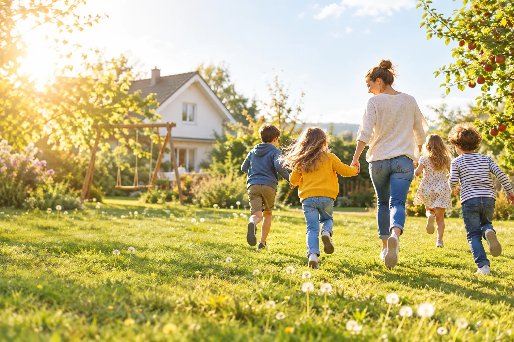
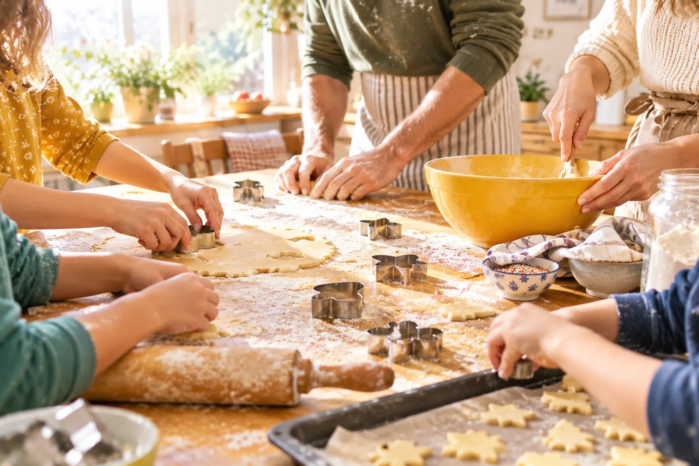
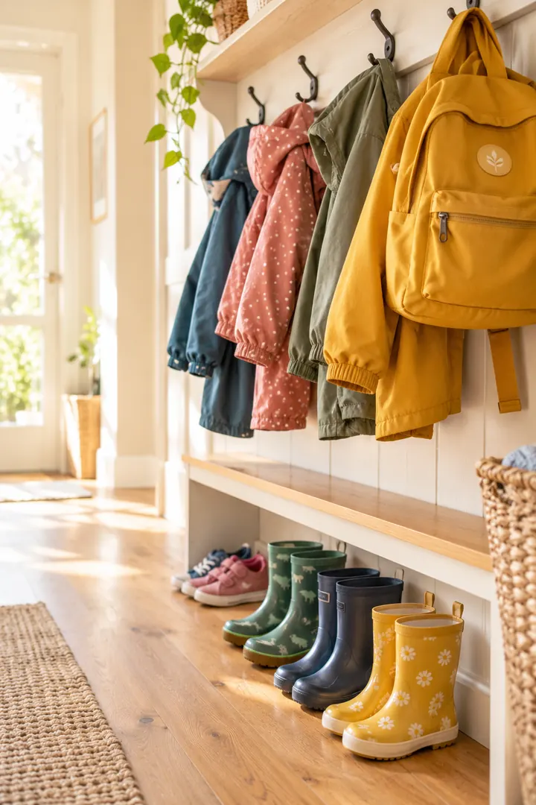
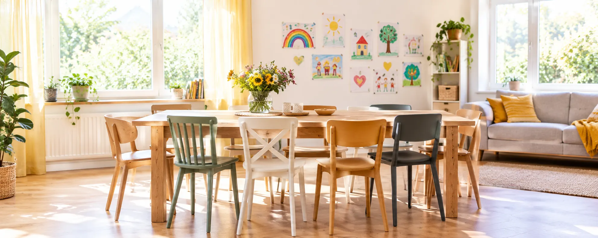
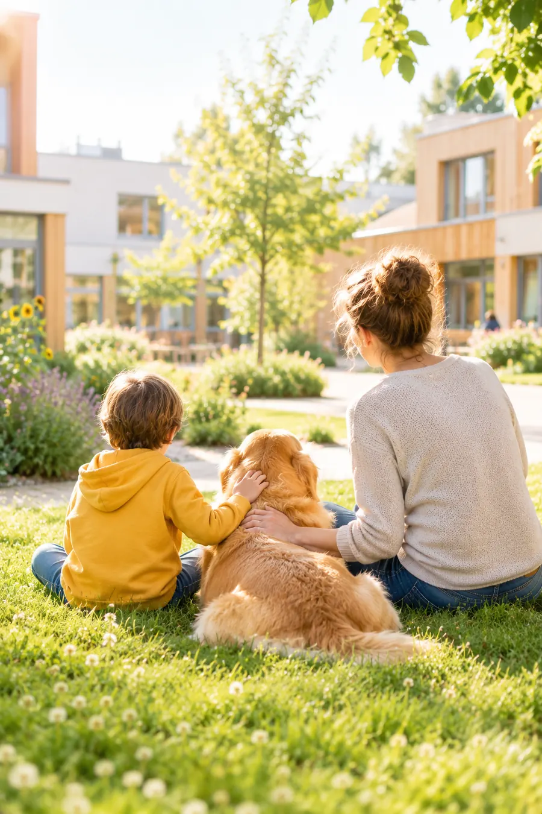

Wir bauen Wohngruppen, in denen Kinder und Jugendliche Sicherheit, feste Bezugspersonen und echte Bildungschancen finden.
Ein Zuhause, in dem Träume wachsen dürfen.
Kein Heim. Ein Zuhause.
Wir bauen Wohngruppen, in denen Kinder und Jugendliche Sicherheit, feste Bezugspersonen und echte Bildungschancen finden.
Start unserer ersten Wohngruppe in Dortmund (geplant)
Wir schaffen Orte, an denen Kinder wieder Kind sein dürfen. Und an denen Zukunft beginnt.
Just Kids with Dreams ist ein Projekt der stationären Kinder- und Jugendhilfe. Kleine Gruppen, verlässliche Menschen, ein eigenes Zimmer und ein Alltag, der sich wie Familie anfühlt.
Mehr über uns
Symbolbild
SymbolbildEin Zuhause ist der Anfang. Was danach kommt, bauen wir gemeinsam: Bildung, Perspektive und Menschen, die bleiben.
Alle AngeboteWohngruppen
Kleine Gruppen, feste Bezugspersonen, ein eigenes Zimmer. Rund um die Uhr begleitet.
Bildung ohne Hürden
Nachhilfe, Lernmittel, Kurse und Stipendien für Kinder, die bisher keinen Zugang hatten.
Zukunftsbörse
Praktika, Ausbildung und Mentoring mit Partnerunternehmen, damit der Weg nach der Wohngruppe trägt.
Schritt für Schritt zu mehr Zuhause.
Wir wachsen bewusst sorgfältig. Jede neue Wohngruppe entsteht erst, wenn Menschen, Räume und Konzept stimmen.
Mitgestalten-
Wir schaffen die Strukturen, die Kinderschutz, Qualität und Transparenz dauerhaft sichern.
-

SymbolbildEin Haus mit eigenem Zimmer für jedes Kind, einem großen Esstisch und einem Team, das bleibt.
-
Wir wachsen dort, wo Jugendämter Plätze brauchen und wir Qualität halten können.
-
Unser langfristiges Ziel. Mehr zur Vision
Der Therapiecampus: Wohnen und Therapie an einem Ort.
Unser Ziel ist ein Campus, auf dem Kinder, Jugendliche und junge Familien genau die Hilfe finden, die sie brauchen. Kurze Wege, vertraute Menschen, Unterstützung dort, wo Kinder leben.
- Intensivwohngruppen für Kinder mit besonderem Bedarf
- Angebote für Mütter und Kinder
- Ein eigener Therapiebereich, auch tiergestützt, kreativ und erlebnisorientiert
Der Therapiecampus ist eine langfristige Vision und befindet sich in der Konzeptphase.

SymbolbildWie du mithelfen kannst
Ob mit Geld, Zeit oder Know-how: Jeder Beitrag schafft ein Stück Zuhause.
Gemeinsam stärker
Alle Partner
Mitglied im Paritätischen NRWAls Mitglied im Wohlfahrtsverband stehen wir für fachliche Qualität, Vielfalt und Offenheit in der Kinder- und Jugendhilfe.
Partner


Kooperationen


Kein Heim. Ein Zuhause.
„Jedes Kind verdient einen Ort, an dem es erwartet wird.“Aus unserem Leitbild
Bleib auf dem Laufenden
Neuigkeiten aus unseren Wohngruppen, etwa einmal im Monat.